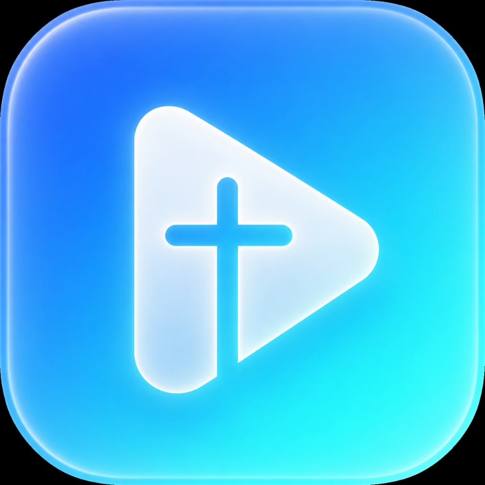

CHURCH STUDIO
v2.2.0 ✨
Smart Worship Media Console
송출 대기 중
모니터 #2 [보조 모니터/프로젝터]
모니터 #1 [주 모니터]
🚀 송출 시작
여호와는 나의 목자시니
내게 부족함이 없으리로다 (시편 23:1)
CHURCH MEDIA MASTER
00:00
00:00
🎬 비디오
🎵 찬양 BGM
100%
✨ NEW UPDATE
새로운 버전이 있습니다!
최신 버전: v2.1.0 (현재 v2.0.0)
신규 기능 및 방송 안정성 개선 사항이 포함되어 있습니다.
업데이트 패키지를 다운로드 중...
🚀 지금 바로 자동 업데이트
나중에 하기